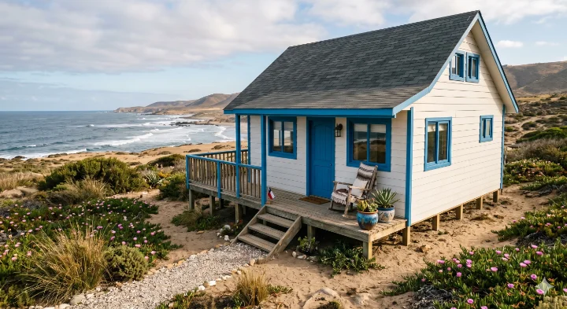

No vendemos modelos cerrados. Diseñamos tu casa según tu terreno, metros y presupuesto, adaptada al clima costero de La Serena — humedad marina y salinidad incluidas en el diseño.
Cotizar mi Casa Rápido ⚡
Cada terreno en La Serena es distinto: pendiente en el Cerro Grande, suelo en el sector de Las Compañías, acceso en Tongoy o orientación frente al mar en El Faro. Por eso partimos de un estilo que te guste — Mediterránea, Tradicional o Metalcón — y lo adaptamos a tu realidad.
PrefabCoquimbo no construye directamente: te asesoramos, te conectamos con fabricantes de la IV Región y cotizamos según tu proyecto. Sin precios de vitrina.
Clima costero
La Serena tiene humedad relativa alta gran parte del año, brisa marina con cloruros y camanchaca en sectores como La Antena o la costa norte. Un prefabricado genérico sin considerar esto puede sufrir corrosión en herrajes y condensación interior.
En la cotización evaluamos contigo: distancia al mar, orientación del terreno, tipo de fundación según suelo y si conviene Panel SIP, Metalcon u otra solución según el fabricante disponible para tu comuna.
Toda vivienda permanente requiere permiso de edificación ante la DOM de La Serena. Te orientamos sobre planos, memoria de cálculo estructural y documentación del predio. La gestión técnica la realiza el fabricante o profesional que contrates.
¿Buscas en otra comuna? Coquimbo · Guía IV Región · Inicio
No publicamos precios genéricos. Dependen de m², terreno, acceso, materialidad y terminaciones. Escríbenos por WhatsApp con una idea de lo que buscas.
Sí, asesoramos en comunas costeras de la IV Región. El costo de traslado y las condiciones del terreno se incluyen en la cotización con el fabricante.
Mediterránea, Tradicional y Metalcón. Son referencias de diseño que adaptamos por completo a tu proyecto — no son modelos cerrados.